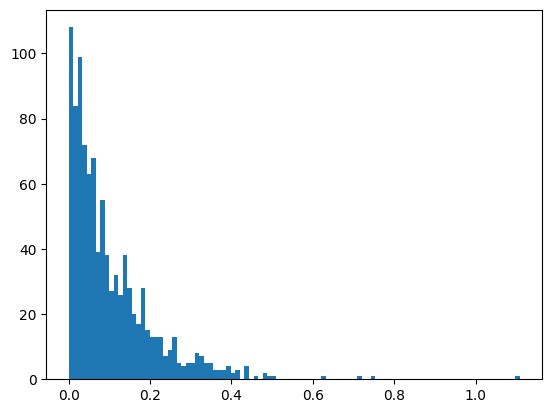
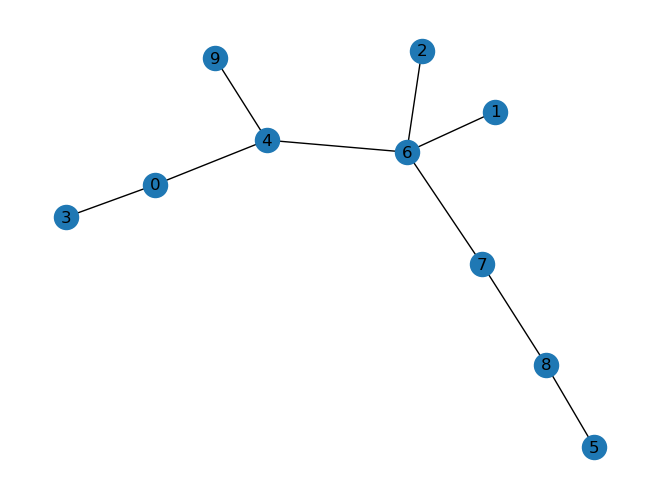
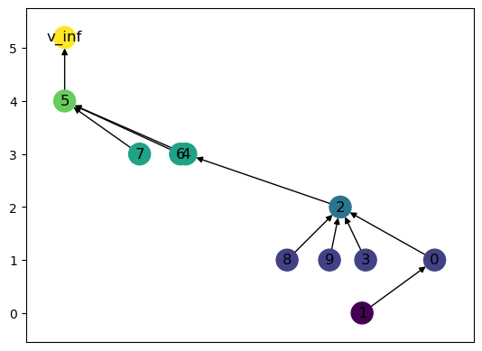
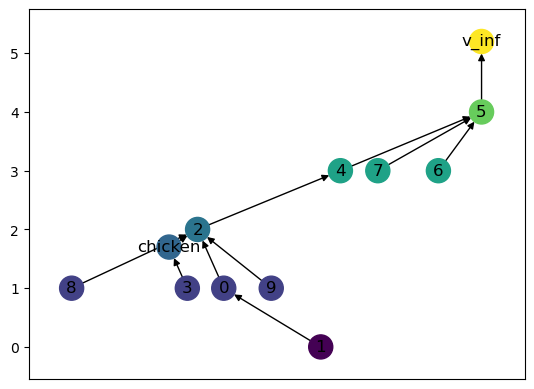
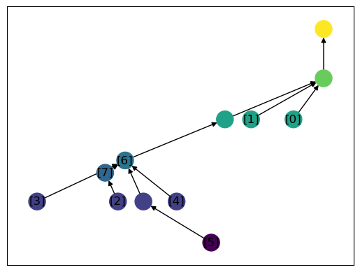
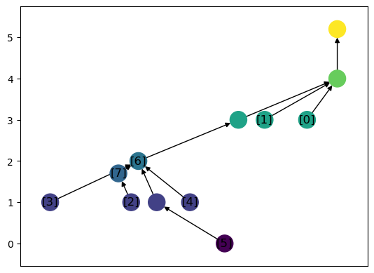

Sandbox for testing purposes
[1]:
import networkx as nx
import numpy as np
from networkx.generators import random_tree
from networkx import random_unlabeled_rooted_tree
import matplotlib.pyplot as plt
from cereeberus import MergeTree
from cereeberus.data.ex_mergetrees import randomMergeTree
[9]:
MT = randomMergeTree(10, func_randomizer='exp', seed = 51)
MT.draw()
MT.set_pos_from_f()
for e in MT.edges():
if MT.f[e[0]] > MT.f[e[1]]:
print(f"edge {e} has values {MT.f[e[0]]} and {MT.f[e[1]]}")

[11]:
R = MT.slice(0, 25)
R.draw()

[ ]:
[ ]:
[ ]:
[27]:
type = 'exp'
f = {'v_inf':np.inf}
range = [-5, 37]
for e in nx.edge_bfs(MT.to_undirected(), 'v_inf'):
# print(e)
u = e[0]
v = e[1]
bot_f = range[0]
if u == 'v_inf':
top_f = range[1]
else:
top_f = f[u]
# print(f"Range is {bot_f} to {top_f}")
if type == 'uniform':
f[v] = np.random.uniform(bot_f, top_f)
elif type == 'exp':
f[v] = top_f-np.random.exponential(.1*(top_f-bot_f))
if f[v] <bot_f:
f[v] = bot_f
MT.f = f
MT.set_pos_from_f(verbose = True)
print(MT.f)
print(MT.pos_f)
MT.draw()
Function values: {'v_inf': inf, 3: 33.30213062175942, 7: 27.71042781187343, 0: 31.966818602610015, 8: 18.73387395958257, 6: 28.997619793632055, 9: 31.711414177200634, 5: 16.095649738456885, 1: 27.74253793688234, 4: 15.093650675538665, 2: 14.522246344478008}
Positions: {3: (-0.47565524641925006, 33.30213062175942), 7: (-0.24011284177587364, 27.71042781187343), 0: (-0.0041446396279385825, 31.966818602610015), 8: (-0.010059263416572595, 18.73387395958257), 6: (0.3027414791023897, 28.997619793632055), 9: (0.41143074188496354, 31.711414177200634), 5: (0.23533070880942752, 16.095649738456885), 1: (0.8025396857532018, 27.74253793688234), 4: (0.02182182727460213, 15.093650675538665), 2: (-0.04389245158494995, 14.522246344478008), 'v_inf': (-1.0, inf)}
{'v_inf': inf, 3: 33.30213062175942, 7: 27.71042781187343, 0: 31.966818602610015, 8: 18.73387395958257, 6: 28.997619793632055, 9: 31.711414177200634, 5: 16.095649738456885, 1: 27.74253793688234, 4: 15.093650675538665, 2: 14.522246344478008}
{3: (-0.47565524641925006, 33.30213062175942), 7: (-0.24011284177587364, 27.71042781187343), 0: (-0.0041446396279385825, 31.966818602610015), 8: (-0.010059263416572595, 18.73387395958257), 6: (0.3027414791023897, 28.997619793632055), 9: (0.41143074188496354, 31.711414177200634), 5: (0.23533070880942752, 16.095649738456885), 1: (0.8025396857532018, 27.74253793688234), 4: (0.02182182727460213, 15.093650675538665), 2: (-0.04389245158494995, 14.522246344478008), 'v_inf': (-0.47565524641925006, 38.93609590494384)}

[19]:
top_f - bot_f
[19]:
0.4072700476715916
[25]:
plt.hist(np.random.exponential(.1, 1000), bins = 100)
[25]:
(array([108., 84., 99., 72., 63., 68., 39., 55., 38., 27., 32.,
26., 38., 28., 20., 17., 28., 15., 13., 13., 13., 7.,
9., 13., 5., 4., 5., 5., 8., 7., 5., 5., 3.,
3., 3., 4., 2., 3., 0., 4., 0., 1., 0., 2.,
1., 1., 0., 0., 0., 0., 0., 0., 0., 0., 0.,
0., 1., 0., 0., 0., 0., 0., 0., 0., 1., 0.,
0., 1., 0., 0., 0., 0., 0., 0., 0., 0., 0.,
0., 0., 0., 0., 0., 0., 0., 0., 0., 0., 0.,
0., 0., 0., 0., 0., 0., 0., 0., 0., 0., 0.,
1.]),
array([9.50360634e-05, 1.11696693e-02, 2.22443025e-02, 3.33189357e-02,
4.43935690e-02, 5.54682022e-02, 6.65428354e-02, 7.76174686e-02,
8.86921019e-02, 9.97667351e-02, 1.10841368e-01, 1.21916002e-01,
1.32990635e-01, 1.44065268e-01, 1.55139901e-01, 1.66214534e-01,
1.77289168e-01, 1.88363801e-01, 1.99438434e-01, 2.10513067e-01,
2.21587701e-01, 2.32662334e-01, 2.43736967e-01, 2.54811600e-01,
2.65886233e-01, 2.76960867e-01, 2.88035500e-01, 2.99110133e-01,
3.10184766e-01, 3.21259400e-01, 3.32334033e-01, 3.43408666e-01,
3.54483299e-01, 3.65557932e-01, 3.76632566e-01, 3.87707199e-01,
3.98781832e-01, 4.09856465e-01, 4.20931099e-01, 4.32005732e-01,
4.43080365e-01, 4.54154998e-01, 4.65229631e-01, 4.76304265e-01,
4.87378898e-01, 4.98453531e-01, 5.09528164e-01, 5.20602798e-01,
5.31677431e-01, 5.42752064e-01, 5.53826697e-01, 5.64901330e-01,
5.75975964e-01, 5.87050597e-01, 5.98125230e-01, 6.09199863e-01,
6.20274497e-01, 6.31349130e-01, 6.42423763e-01, 6.53498396e-01,
6.64573029e-01, 6.75647663e-01, 6.86722296e-01, 6.97796929e-01,
7.08871562e-01, 7.19946196e-01, 7.31020829e-01, 7.42095462e-01,
7.53170095e-01, 7.64244729e-01, 7.75319362e-01, 7.86393995e-01,
7.97468628e-01, 8.08543261e-01, 8.19617895e-01, 8.30692528e-01,
8.41767161e-01, 8.52841794e-01, 8.63916428e-01, 8.74991061e-01,
8.86065694e-01, 8.97140327e-01, 9.08214960e-01, 9.19289594e-01,
9.30364227e-01, 9.41438860e-01, 9.52513493e-01, 9.63588127e-01,
9.74662760e-01, 9.85737393e-01, 9.96812026e-01, 1.00788666e+00,
1.01896129e+00, 1.03003593e+00, 1.04111056e+00, 1.05218519e+00,
1.06325983e+00, 1.07433446e+00, 1.08540909e+00, 1.09648373e+00,
1.10755836e+00]),
<BarContainer object of 100 artists>)

[ ]:
[ ]:
[ ]:
[ ]:
[25]:
# T = random_unlabeled_rooted_tree(10, seed = 0)
T = random_tree(10, seed = 0)
print(nx.is_tree(T))
nx.draw(T, with_labels=True)
True

[7]:
MT = MergeTree(T,root = 5)
# MT.set_pos_from_f()
MT.pos_f
[7]:
{5: (-0.5555708109123855, 4),
4: (-0.16787010058938995, 3),
6: (-0.18517169021850033, 3),
7: (-0.31578764079648064, 3),
2: (0.3266420309597904, 2),
0: (0.628682744164983, 1),
3: (0.4077897402230644, 1),
8: (0.15643537284115994, 1),
9: (0.29215110201566186, 1),
1: (0.3963982154815085, 0),
'v_inf': (-0.5555708109123855, 5.2)}
[8]:
MT.fix_pos_f()
MT.pos_f
[8]:
{5: (-0.5555708109123855, 4),
4: (-0.16787010058938995, 3),
6: (-0.18517169021850033, 3),
7: (-0.31578764079648064, 3),
2: (0.3266420309597904, 2),
0: (0.628682744164983, 1),
3: (0.4077897402230644, 1),
8: (0.15643537284115994, 1),
9: (0.29215110201566186, 1),
1: (0.3963982154815085, 0),
'v_inf': (-0.5555708109123855, 5.2)}
[9]:
list(MT.predecessors('v_inf'))
[9]:
[5]
[10]:
MT.draw()

[11]:
MT.nodes
[11]:
NodeView((5, 4, 6, 7, 2, 0, 3, 8, 9, 1, 'v_inf'))
[12]:
MT.get_leaves()
[12]:
[6, 7, 3, 8, 9, 1]
[13]:
MT.LCA(9,3)
[13]:
2
[14]:
MT.LCA_matrix_labels(type = 'leaves')
leaf version
[6, 7, 3, 8, 9, 1] [0, 1, 2, 3, 4, 5]
[14]:
array([[1., 4., 4., 4., 4., 4.],
[4., 0., 4., 4., 4., 4.],
[4., 4., 2., 2., 2., 2.],
[4., 4., 2., 1., 2., 2.],
[4., 4., 2., 2., 3., 2.],
[4., 4., 2., 2., 2., 4.]])
[15]:
L = MT.get_leaves()
[16]:
min(MT.f.values())
[16]:
0
[17]:
MT.label_all_leaves()
[18]:
MT.labels
[18]:
{0: 6, 1: 7, 2: 3, 3: 8, 4: 9, 5: 1}
[19]:
MT.add_label(2)
MT.add_label_edge(3,2, 'chicken', 1.7)
MT.labels
[19]:
{0: 6, 1: 7, 2: 3, 3: 8, 4: 9, 5: 1, 6: 2, 7: 'chicken'}
[20]:
MT.f['chicken']
[20]:
1.7
[21]:
MT.draw(with_labels = True)

[22]:
MT.labels
[22]:
{0: 6, 1: 7, 2: 3, 3: 8, 4: 9, 5: 1, 6: 2, 7: 'chicken'}
[23]:
color_map = [MT.pos_f[v][1] for v in MT.nodes]
label_map = {}
for v in MT.nodes:
if not v in MT.labels.values():
label_map[v] = None
else:
label_map = {}
for k, v in MT.labels.items():
label_map[v] = label_map.get(v, []) + [k]
print(label_map)
nx.draw_networkx_nodes(MT,MT.pos_f,node_color = color_map)
nx.draw_networkx_edges(MT,MT.pos_f)
nx.draw_networkx_labels(MT,MT.pos_f, labels = label_map)
{6: [0], 7: [1], 3: [2], 8: [3], 9: [4], 1: [5], 2: [6], 'chicken': [7]}
[23]:
{6: Text(0.2828086074882763, 3, '[0]'),
7: Text(0.15502084727532217, 3, '[1]'),
3: Text(-0.24687029528484294, 1, '[2]'),
8: Text(-0.4909288927615536, 1, '[3]'),
9: Text(-0.06982927526178426, 1, '[4]'),
1: Text(0.034571816916680854, 0, '[5]'),
2: Text(-0.22522020432130074, 2, '[6]'),
'chicken': Text(-0.2853941892057095, 1.7, '[7]')}

[24]:
MT.draw(with_labels = True, label_type = 'labels')

[ ]:
Making random merge trees
np.randomint(10)
np.random
[34]:
np.random.seed(0)
np.random.randint(10)
[34]:
5
[35]:
MT.nodes
[35]:
NodeView((5, 4, 6, 7, 2, 0, 3, 8, 9, 1, 'v_inf', 'chicken'))
[45]:
for v in nx.bfs_edges(MT, source = 7):
print(v)
(7, 5)
(5, 'v_inf')
[ ]: